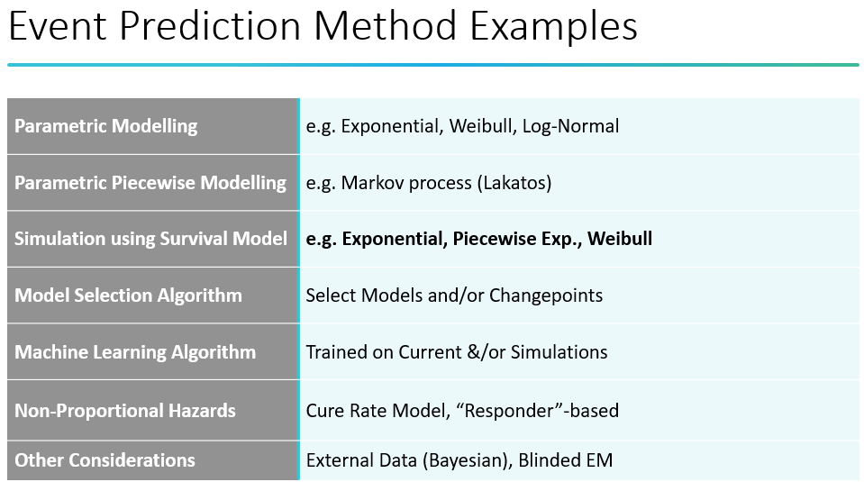

General Consideration
Clinical Trial Considerations
Design and Conduct of Clinical Trial
1. Trial Objective and Context
The foundation of any clinical trial lies in a clear understanding of its scientific objective. It is crucial to define whether the trial aims to predict outcomes or explain mechanisms. Specifically, the trial should clarify whether it intends to determine if an intervention is better, worse, or equivalent, and if so, for which specific patient subgroups this conclusion applies.
Equally important is identifying the primary audience for the trial’s conclusions. This could be:
- Regulatory authorities, such as the FDA or EMA, particularly relevant for trials in phases II or III where approval decisions are influenced.
- The scientific community, with the intention of contributing to peer-reviewed literature and advancing medical understanding.
- The general public, especially for trials addressing high-profile diseases or public health crises.
In designing the trial, practical limitations must be considered, such as:
- The availability of eligible patients, which is particularly significant in trials for rare diseases.
- The timeline and financial resources, which dictate the scope and feasibility of the study.
- The level of available expertise and diagnostic infrastructure, ensuring the trial is executable under current operational conditions.
2. Data and Endpoint Considerations
Careful planning is required regarding the data to be collected, ensuring:
- All data points are scientifically justified, relevant to the objectives, and ethically appropriate.
- Compliance with legal and ethical standards, such as patient privacy laws (e.g., GDPR) and informed consent requirements.
A clear mapping must exist between the collected data and:
The endpoint type, which could be:
- Continuous endpoints, e.g., blood pressure levels.
- Categorical endpoints, e.g., response/no response.
- Time-to-event (survival) endpoints, e.g., time to disease progression.
Additionally, the chosen estimator, such as a hazard ratio for survival data, must align appropriately with both the data type and the trial objectives.
3. Hypothesis Construction
The trial should explicitly define its primary hypothesis, which can take several forms:
- Superiority, aiming to demonstrate that one intervention is better than another.
- Equivalence, showing that two interventions have no meaningful difference.
- Non-inferiority, testing whether one intervention is not worse than another by a pre-specified margin.
- Super-superiority, seeking to demonstrate not only superiority but an exceptionally large effect size.
If the trial involves multiple tests or comparisons, it is essential to:
Define how overall trial success will be determined, using:
- A conjunctive approach (all tests must be positive).
- A disjunctive approach (success if at least one test is positive).
- A marginal approach (success based on individual outcomes).
Implement a strategy to control the Type I error rate, such as:
- Family-Wise Error Rate (FWER) control.
- False Discovery Rate (FDR) control.
- Other statistically sound approaches to maintain integrity of results.
4. Trial Design Considerations
Selecting an appropriate trial design is central to obtaining reliable and interpretable results. Possible designs include:
- Parallel-group designs, where different groups receive different interventions simultaneously.
- Cross-over designs, allowing subjects to receive multiple interventions in sequence.
- Single-arm trials, often used when no control group is ethical or feasible.
- Multi-arm trials, comparing several interventions simultaneously.
The design impacts both:
- The efficiency of obtaining results.
- The types of inferences that can legitimately be drawn.
If randomization is required, considerations include:
- The method of randomization, such as simple randomization, stratified randomization, or minimization.
- The level of randomization, e.g., individual or cluster-based.
- Strategies to maintain blinding, ensuring that treatment assignments remain concealed where necessary.
5. Estimator, Effect Size, and Estimand Considerations
A well-defined estimand strategy ensures clarity in interpreting treatment effects, considering:
Whether the estimand reflects:
- The effect of receiving treatment as assigned.
- The effect while actually on treatment.
- A hypothetical scenario (e.g., assuming full adherence).
The estimator selected must:
- Be appropriate for the estimand and endpoint.
- Demonstrate sufficient robustness, meaning it remains reliable under reasonable deviations from assumptions.
- Ensure that the logical link from estimand to estimator to estimate is coherent and scientifically valid.
Approaches for handling:
- Missing data, using techniques such as multiple imputation.
- Other intercurrent events (ICEs), such as treatment discontinuation, should be pre-specified and consistently applied.
6. Statistical Model and Test Considerations
The statistical model forms the backbone of data analysis, and its selection should:
Align with the endpoint, trial design, and estimand strategy.
Be chosen for its efficiency, ensuring maximum power with minimal sample size.
Be compared against alternatives through:
- Power calculations.
- Simulations to assess robustness and operating characteristics.
Additional considerations include:
- The model’s sensitivity to assumptions and potential for misspecification.
- Available options and tuning parameters to enhance model performance and adaptability.
7. Advanced Trial Aspects
For complex trials, advanced methodologies may be considered, such as:
Adaptive Designs, where pre-planned adaptations (e.g., sample size adjustments, early stopping) are permitted based on interim data. Key factors include:
- Clear decision criteria for adaptations.
- Integration of adaptations into the trial’s operational logistics, such as Data Monitoring Committee (DMC) workflows.
- Statistical justification of adaptations through simulations, demonstrating control of Type I error and other performance metrics.
Bayesian Approaches, which incorporate prior knowledge through:
- Well-justified prior distributions, possibly based on existing data or expert elicitation.
- Verification that the Bayesian framework maintains appropriate Type I error control.
Engagement with regulatory authorities and stakeholders is critical, ensuring alignment with their:
- Requirements, including statistical standards.
- Preferences, which may involve pre-specification of methods and transparent communication.
8. Sample Size Considerations
An adequate sample size is essential to ensure:
- Sufficient power to detect meaningful treatment effects.
- Avoidance of Type S (sign) errors (wrong direction) or Type M (magnitude) errors (overestimated effects).
If practical constraints limit sample size:
- The effect size deemed detectable must be clinically and scientifically justifiable.
- A clear strategy to maximize recruitment, such as outreach programs or site expansion, should be in place.
- Efforts to enhance adherence during the trial, including patient engagement and compliance monitoring, are essential to preserve data integrity and trial validity.
Common Pitfalls in Clinical Trial Design and Analysis
1. “Simplifying” Data and/or Model
Dichotomania and Loss of Efficiency Dichotomizing continuous variables (turning them into “yes/no”, “responder/non-responder”, etc.) severely reduces statistical efficiency:
- Even in the most favorable, perfectly balanced case, dichotomization leads to approximately a 33% loss of efficiency.
- This translates directly into sample size inflation — you may need 20–30% more patients to maintain the same statistical power compared to analyzing the continuous variable properly.
- For most real-world scenarios, the efficiency loss is even worse, making dichotomization highly undesirable from both scientific and resource perspectives.
Pitman Efficiency Curve
- Maximum efficiency occurs when continuous data are used appropriately.
- As soon as you dichotomize or select arbitrary cutpoints, efficiency drops significantly.
- This inefficiency affects sample size calculations and increases the risk of inconclusive results.
Responder Analysis Pitfalls Responder analyses are especially problematic because:
They inherently involve dichotomization based on arbitrary thresholds.
Thresholds often lack a clear clinical or biological justification.
When based on change from baseline variables, responder analyses can produce misleading scenarios, where:
- Apparent improvements depend entirely on arbitrary thresholds.
- Counterintuitive or inflated power is observed for some endpoints.
As highlighted by Senn and others in the literature, responder analyses frequently:
- Waste valuable information.
- Create interpretation challenges.
- Lead to incorrect conclusions.
Best Practice Principle
Always use the data as close to its original form as possible:
- Continuous variables should be analyzed as continuous.
- Count data should be modeled properly as counts.
- Time-to-event (survival) data should use appropriate survival models.
Avoid “simplifying” data just to make results easier to explain to non-technical stakeholders — this shortcut sacrifices scientific integrity.
2. Not Justifying or Understanding Design
Trial designs must be evaluated for:
- Robustness: Ability to withstand deviations from ideal assumptions.
- Efficiency: How well the design uses available resources to detect true effects.
Correct interpretation of:
- p-values — avoiding common misinterpretations (e.g., equating p > 0.05 with evidence of no effect).
- Hypotheses — ensuring the correct choice between superiority, equivalence, or non-inferiority frameworks.
Justification of equivalence or non-inferiority margins is critical and must be:
- Clinically meaningful.
- Pre-specified.
- Supported by scientific reasoning.
3. Post-hoc Design Changes or Rationalization
Avoid making unplanned design or analysis changes after seeing the data:
- This includes p-hacking, data dredging, or excessive subgroup exploration.
- Such practices inflate Type I error and undermine the credibility of findings.
Particularly, avoid:
- Including post-randomization covariates in models, which introduces bias.
- Retrospective model adjustments based on observed outcomes.
Instead:
- Pre-specify the design and analysis plan as comprehensively as possible.
- Register protocols and statistical analysis plans (SAP) publicly when feasible.
4. Covariates: Use Them Properly
If you collect baseline covariates (e.g., age, gender, smoking status, biomarkers), use them in the analysis, especially:
- In ANCOVA or regression models for continuous outcomes.
- In logistic or Cox models for binary or time-to-event outcomes.
Proper covariate adjustment:
- Increases statistical power.
- Reduces residual variability (unexplained error).
- Improves precision of estimates.
This is supported by:
- FDA guidance emphasizing the importance of covariate adjustment.
- The logical argument that if you believe a covariate is worth measuring (even if expensive or complex), it should be leveraged analytically.
Caveat: Only pre-randomization covariates should be included:
- These reflect baseline characteristics, independent of treatment.
- Including post-randomization covariates can introduce bias and inflate Type I error, as they may be influenced by treatment itself.
5. Not Involving Other Stakeholders (Early and Often)
Early involvement and feedback from:
- Regulators (e.g., FDA, EMA), to ensure the design meets approval requirements.
- Patients, to improve feasibility, relevance, and acceptability.
- Data professionals, to address data quality and analysis feasibility.
This collaboration increases the likelihood of trial success and reduces avoidable mistakes.
Quote from Ronald Fisher
“To call in the statistician after the experiment is done may be no more than asking him to perform a postmortem examination: he may be able to say what the experiment died of.”
Ronald Fisher, a pioneer in modern statistics, emphasizes that:
- Poorly designed trials often cannot be “rescued” by statistical analysis after the fact.
- Statisticians should be involved from the design stage, not just during analysis.
- Otherwise, flaws (like inadequate power, bias, poor endpoint selection) may doom the trial, with statisticians merely diagnosing the failure afterwards.
Overall Message
Clinical trial success requires:
✔ Rigorous design based on sound statistical principles. ✔ Avoidance of unnecessary simplifications that reduce power and efficiency. ✔ Pre-specification to minimize bias and misleading findings. ✔ Early, active collaboration with all stakeholders. ✔ Proper interpretation of statistical results aligned with scientific objectives.
Failing to respect these principles increases the risk of invalid, inefficient, or irreproducible trial outcomes.
Power as Trial Design Choice Tool
Background on Power
- Power refers to the probability of correctly detecting a true treatment effect in a trial, commonly set at 80% or 90%.
- A well-powered trial has a higher chance of producing meaningful results and avoiding false negatives (Type II errors).
- Power is influenced by several trial design choices, which can either enhance or reduce power—and thus directly affect trial success and resource requirements.
1. Dichotomization
Explanation: This refers to converting a continuous outcome into a binary one (e.g., “responder” vs. “non-responder”).
Impact on Power:
- Significantly reduces power because it discards information from the continuous scale.
- Results in increased sample size requirements to achieve the same power as a continuous outcome.
Example: Turning a pain score from 0-10 into “improved” vs. “not improved” reduces sensitivity.
Bottom Line: Responder analysis is (nearly) always a poor choice if a continuous measure is available.
2. Including Covariates
Explanation: Adding relevant covariates (baseline characteristics) into the statistical model.
Impact on Power:
- Increases power proportional to variance explained (R²) by the covariates.
- More variance explained → less residual variability → greater ability to detect a treatment effect.
Important Caveats:
- No power gain from including post-randomization covariates or simple score change.
- Only pre-randomization covariates should be included to avoid bias.
Example: Adjusting for baseline age or disease severity can boost efficiency.
3. Group Sequential Design
Explanation: Trial includes planned interim analyses with the possibility of stopping early for efficacy or futility.
Impact on Power and Sample Size:
- Slight increase in maximum sample size needed (if trial runs to full completion).
- However, expected sample size decreases significantly due to possibility of early stopping.
Example: Trial designed to stop at interim if strong positive effect is seen—reduces average trial size over many repetitions.
4. Randomization Level
Explanation: The structure or level at which randomization is applied.
Impact on Power:
- Paired/crossover designs have higher power (if appropriate) compared to parallel designs, as within-subject comparisons reduce variability.
- Parallel designs have higher power than cluster randomized designs, because clustering introduces intraclass correlation (ICC); higher ICC means lower power.
- Factorial designs may offer higher power if evaluating multiple interventions efficiently.
Example:
- Crossover trial comparing two drugs reduces variability as subjects serve as their own controls.
- Cluster randomization (e.g., by hospital) requires larger sample size to account for correlation within clusters.
5. Test + Estimator Choice
Explanation: The specific statistical tests and estimators used in the analysis.
Impact on Power:
- Highly context dependent.
- Power depends on how well the chosen test aligns with the actual data distribution and structure.
Example:
- Even with non-normal data, a t-test may still be appropriate due to robustness.
- In other cases, nonparametric tests or alternative estimators may be needed to maintain power.
Recommendation: Compare performance of candidate tests under plausible scenarios during planning.
Summary Takeaways
- Avoid dichotomization when possible.
- Use pre-randomization covariates to increase power.
- Group sequential designs can reduce expected sample size.
- Prefer designs like paired/crossover or parallel over cluster when feasible.
- Choose statistical tests carefully based on data properties.
Clinical Trial Milestones
The practice of milestone prediction in clinical trials is multifaceted, blending statistical rigor with strategic foresight. It’s about more than just adhering to a schedule; it’s about adapting to realities on the ground and ensuring that a trial can meet its objectives without wasting resources. Effective milestone management helps maintain the integrity of the trial process, ensuring that therapeutic potentials are accurately assessed while upholding the highest standards of safety and efficacy.
In clinical trial management, understanding both enrollment dynamics and event occurrence—including dropouts, cures, or any factors preventing subjects from experiencing key events—is crucial. Given the commonality of delays, with approximately 80% of trials experiencing slowdowns and about 85% failing to reach recruitment goals, the need for robust milestone prediction is evident. This prediction involves assessing practical elements such as enrollment strategies and resource allocation, which are essential to maintaining trial timelines and efficiency.
Key Challenges and Strategies in Milestone Prediction
Enrollment and Event Tracking: The primary milestones in most trials involve patient enrollment and tracking event occurrences, like patient survival or endpoint achievement. In event-driven studies, such as those focusing on survival, predicting when the study might conclude or when interim analyses might be needed is paramount.
Handling Practical Challenges: Addressing practical issues involves predicting enrollment timelines and identifying potential delays early. If enrollment lags, strategies might include opening new trial sites or closing underperforming ones. Proactive resource management, such as reallocating resources to more critical areas, becomes possible with accurate milestone forecasting.
Data Availability and Prediction Management:
- Data Handling: Trials might not have access to all data, particularly unblinded data. Predictors might need to rely on blinded data or assume an overall global event process rather than specific data from individual groups. The complexity of the methodology used can vary depending on data access levels.
- Site and Subject Level Data: Access to detailed site or subject level data can provide greater flexibility and precision in predictions, allowing for more tailored adjustments in trial management.
Frequency and Timing of Predictions:
- Continuous vs. Intermittent Predictions: There is a debate between continuously updating predictions as new data comes in and waiting for patterns to develop. Continuous updates might disrupt the trial’s natural progression, particularly if early trial phases naturally exhibit slower recruitment.
- Resource Management: Overly frequent adjustments might lead to inefficient resource use, such as unnecessary expansion of trial sites which can overwhelm staff and inflate costs.
Special Considerations for Survival Studies:
- Delayed Effects: In studies involving treatments like immunotherapies, delayed effects are common, where the treatment’s impact takes time to manifest. This must be factored into milestone predictions to avoid premature conclusions about treatment efficacy or participant response.
External Predictions: Employing external experts for milestone predictions can reduce bias and provide access to a broader range of methodologies. External predictors, less influenced by internal trial dynamics, might offer a clearer, unbiased perspective.
Additional Considerations
- Safety and Regulatory Benchmarks: Besides primary outcomes, secondary considerations might include safety analyses and regulatory compliance milestones. These are crucial for maintaining ethical standards and satisfying regulatory requirements.
- Sponsor-Specific Requests: Tailoring milestone predictions to meet specific sponsor requests or interests from regulatory bodies can also guide the frequency and method of prediction updates.
Enrollment & Event Milestone Predictions
Enrollment Prediction
Enrollment prediction is a crucial aspect of clinical trial planning and management, serving as a foundational metric for assessing a trial’s timeline and resource allocation. It encompasses predicting both the rate and completeness of participant recruitment over the course of the study. This process not only impacts the financial and logistical aspects of a trial but also its scientific validity, as timely enrollment ensures that the trial can achieve its intended statistical power and objectives.
Implementing effective enrollment predictions requires a multi-faceted approach: - Data integration: Combining data from multiple sources, including historical trial data, current site performance, and external factors. - Continuous monitoring: Regularly updating predictions based on new data to stay responsive to changing conditions. - Stakeholder communication: Using prediction data to maintain open dialogue with sponsors and adjust expectations and strategies as needed.
Initial and Mid-Trial Predictions
Enrollment predictions typically begin with estimating how long it will take to recruit the full sample size needed to meet the study’s power requirements. This involves assessing: - Demographics: The availability and willingness of the target population to participate. - Competing studies: Other ongoing trials that could affect participant availability. - Site capabilities: Each site’s ability to recruit and manage participants.
Mid-trial predictions evaluate whether enrollment is on track to meet planned timelines. Adjustments might be needed if the trial is progressing faster or slower than expected.
Challenges with Early and Later Phase Trials
- Early-phase trials often struggle with recruitment due to the experimental nature of the treatments and the typically smaller pool of eligible participants.
- Later-phase trials may face competition from established treatments, making it harder to recruit participants unless the new treatment offers clear advantages.
Site-Specific Predictions
More sophisticated approaches to enrollment prediction involve modeling each recruitment site or region separately. This allows for: - Detailed tracking: Identifying which sites are underperforming. - Resource reallocation: Shifting resources to more effective sites or boosting those that are lagging. - Adaptive strategies: Adjusting recruitment tactics based on real-time data.
Methodologies for Enrollment Prediction
Simple Statistical Models These include linear or polynomial models that provide a basic forecast based on past recruitment rates.
Piecewise Parametric Models These models identify changes in recruitment pace, such as an initial slow start followed by a faster rate, allowing for more nuanced predictions.
Simulation-Based Modeling Simulation offers a flexible and dynamic approach to modeling recruitment. It allows for:
- Scenario testing: Simulating different recruitment strategies to see potential outcomes.
- Bootstrapping: Using resampling techniques to estimate prediction intervals and assess uncertainty.
Bayesian Models These incorporate prior data and expert opinions to refine predictions, adapting as new data becomes available during the trial.
Machine Learning Approaches While not covered in detail here, machine learning methods can analyze complex datasets to predict recruitment outcomes, potentially uncovering hidden patterns that affect enrollment.
Event Prediction
In survival trials, the occurrence of key events such as death or disease progression is fundamental to determining the trial’s timeline and outcomes. The predictive modeling of these events is complex due to the multifaceted nature of survival data, which can include various competing risks and time-dependent factors.
Event-Driven Endpoints: In many clinical trials, especially those concerning life-threatening conditions, the trial’s endpoint is driven by the accumulation of specific events among participants (e.g., death, disease progression). The number of events directly impacts the trial’s power and its ability to provide statistically meaningful results. Without a sufficient number of events, the trial cannot conclude or make robust inferences.
Challenges in Event Prediction
- Continuous Enrollment: If enrollment is ongoing, predictions must account not only for current participants but also for how new enrollees might alter the event dynamics.
- Competing Risks: Factors such as alternative treatments, dropouts, or other medical interventions can influence the timing and occurrence of the primary events of interest.
- Event Scarcity: In scenarios where events are fewer than expected, it can delay the trial significantly, affecting timelines and potentially increasing costs and resource usage.
Modeling Techniques for Event Prediction
Parametric Models: These models, such as the exponential or Weibull models, assume a specific distribution for the time until an event occurs. They are straightforward but often too simplistic for complex survival data.
Piecewise Parametric Models: These improve on simple parametric models by allowing different parameters in different phases of the study, accommodating varying hazard rates across the trial’s duration.
Simulation-Based Models: Simulations provide a flexible and dynamic approach to understanding how different factors might impact event rates. This method is particularly useful in survival trials where complex interactions between patient characteristics and treatment effects need to be considered.
Practical Implementation of Event Prediction
Exponential Models: Assume constant hazard rates throughout the trial period. This is simplistic but can serve as a baseline for understanding baseline event rates.
Piecewise Exponential Models: Offer more flexibility by dividing the trial into segments, each with its own hazard rate, better modeling the natural progression of disease or treatment effects over time.
Two-Parameter Models: These models account for the duration a participant has been in the study, adjusting the event probability based on this tenure. They are useful in long-term studies where the risk of an event may increase or decrease over time.
Model Selection and Evaluation: Employing information criteria like AIC (Akaike Information Criterion) helps in selecting the best-fitting model amongst various candidates. Advanced techniques might also dynamically allocate change points to adapt the model to observed data patterns more accurately.

Reference
Webinars
- Statistical Power from First Principles: https://www.statsols.com/guides/statistical-power-from-first-principles
- Everything to Know About Sample Size Determination: https://www.statsols.com/articles/everything-to-know-about-sample-size-determination
- Selecting the Right Clinical Trial Design https://www.statsols.com/guides/selecting-the-right-clinical-trial-design
- A Guide to Projecting How Long Your Trial Will Take https://www.statsols.com/guides/projecting-how-long-your-trial-will-take
Trial Design Overviews
Senn, S. S. (2021). Statistical issues in drug development (3rd ed.). John Wiley & Sons.
Harrell, F. (2025). Biostatistics for Biomedical Research. Vanderbilt Department of Biostatistics. Available at: https://hbiostat.org/bbr/
Lakens, D. (2016). Improving your statistical inferences. Available at: https://lakens.github.io/statistical_inferences
Meinert, C. L. (2012). Clinical trials: Design, conduct and analysis (Vol. 39). OUP USA.
Friedman, L. M., Furberg, C. D., DeMets, D. L., Reboussin, D. M., & Granger, C. B. (2015). Fundamentals of clinical trials. Springer.
American Medical Association. (2023). Guidelines for conducting clinical trials. Journal of Clinical Research, 29(3), 211–230.
International Council for Harmonisation of Technical Requirements for Pharmaceuticals for Human Use (ICH). (1998). Statistical principles for clinical trials (E9). Available at: https://database.ich.org/sites/default/files/E9_Guideline.pdf
International Council for Harmonisation of Technical Requirements for Pharmaceuticals for Human Use (ICH). (2019). Addendum on estimands and sensitivity analysis in clinical trials to the guideline on statistical principles for clinical trials (E9[R1]). Available at: https://database.ich.org/sites/default/files/E9-R1_Step4_Guideline_2019_1203.pdf
Kahan, B. C., Hindley, J., Edwards, M., Cro, S., & Morris, T. P. (2024). The estimands framework: A primer on the ICH E9 (R1) addendum. BMJ, 384.
Senn, S. S. (2002). Cross-over trials in clinical research (2nd ed.). John Wiley & Sons.
International Council for Harmonisation of Technical Requirements for Pharmaceuticals for Human Use (ICH). (2021). General considerations for clinical studies (E8[R1]). Available at: https://database.ich.org/sites/default/files/ICH_E8-R1_Guideline_Step4_2021_1006.pdf
International Council for Harmonisation of Technical Requirements for Pharmaceuticals for Human Use (ICH). ICH Guidelines. Available at: https://www.ich.org/page/ich-guidelines
U.S. Food and Drug Administration (FDA). Clinical Trials Guidance Documents. Available at: https://www.fda.gov/science-research/clinical-trials-and-human-subject-protection/clinical-trials-guidance-documents
European Medicines Agency (EMA). Clinical Trials Regulation. Available at: https://www.ema.europa.eu/en/human-regulatory-overview/research-and-development/clinical-trials-human-medicines/clinical-trials-regulation
SPIRIT-CONSORT Group. SPIRIT-CONSORT Guidelines. Available at: https://www.consort-spirit.org/
van Smeden, M. (2022). A very short list of common pitfalls in research design, data analysis, and reporting. PRiMER: Peer-Reviewed Reports in Medical Education Research, 6, 26.
Sydes, M. R., & Langley, R. E. (2010). Potential pitfalls in the design and reporting of clinical trials. The Lancet Oncology, 11(7), 694–700.
Zlowodzki, M., Jönsson, A., & Bhandari, M. (2005). Common pitfalls in the conduct of clinical research. Medical Principles and Practice, 15(1), 1–8.
Dahly, D. (2024). Sorry, what was the question again? Available at: https://statsepi.substack.com/p/sorry-what-was-the-question-again
Altman, D. BMJ Statistics Notes. Available at: https://www.bmj.com/specialties/statistics-notes
Covariates/Randomization Issues
Senn, S. (2006). Change from baseline and analysis of covariance revisited. Statistics in Medicine, 25(24), 4334–4344.
Senn, S. (2019). The well-adjusted statistician: Analysis of covariance explained. Applied Clinical Trials.
Van Breukelen, G. J. (2006). ANCOVA versus change from baseline had more power in randomized studies and more bias in nonrandomized studies. Journal of Clinical Epidemiology, 59(9), 920–925.
Food and Drug Administration (FDA). (2023). Adjusting for covariates in randomized clinical trials for drugs and biological products: Guidance for industry. Available at: https://www.fda.gov/media/148910/download
Bland, J. M., & Altman, D. G. (2011). Comparisons against baseline within randomised groups are often used and can be highly misleading. Trials, 12, Article 264.
Senn, S. (2013). Seven myths of randomisation in clinical trials. Statistics in Medicine, 32(9), 1439–1450.
Recruitment, Adherence, and Missing Data
Brown, J. T., & Smith, R. A. (2022). Patient recruitment strategies in clinical trials: Challenges and solutions. Journal of Clinical Trials, 15(1), 45–67.
Sterne, J. A., White, I. R., Carlin, J. B., Spratt, M., Royston, P., Kenward, M. G., Wood, A. M., & Carpenter, J. R. (2009). Multiple imputation for missing data in epidemiological and clinical research: Potential and pitfalls. BMJ, 338, Article b2393.
Hughes, R. A., Heron, J., Sterne, J. A., & Tilling, K. (2019). Accounting for missing data in statistical analyses: Multiple imputation is not always the answer. International Journal of Epidemiology, 48(4), 1294–1304.
Sacristán, J. A., Aguarón, A., Avendaño-Solá, C., Garrido, P., Carrión, J., Gutiérrez, A., Kroes, R., & Flores, A. (2016). Patient involvement in clinical research: Why, when, and how. Patient Preference and Adherence, 10, 631–640.
P-values: Misinterpretation and P-hacking
Wasserstein, R. L., & Lazar, N. A. (2016). The ASA statement on p-values: Context, process, and purpose. The American Statistician, 70(2), 129–133.
Altman, D. G., & Bland, J. M. (1995). Statistics notes: Absence of evidence is not evidence of absence. BMJ, 311(7003), 485.
Smith, G. D., & Ebrahim, S. (2002). Data dredging, bias, or confounding: They can all get you into the BMJ and the Friday papers. BMJ, 325(7378), 1437–1438.
Stefan, A. M., & Schönbrodt, F. D. (2023). Big little lies: A compendium and simulation of p-hacking strategies. Royal Society Open Science, 10(2), 220346.
Stefan, A. M., & Schönbrodt, F. D. (2023). Gazing into the abyss of p-hacking: A Shiny app for p-hacking simulation. Available at: https://shiny.psy.lmu.de/felix/ShinyPHack/
Complex Design + Simulation
Food and Drug Administration (FDA), 2019. Adaptive Designs for Clinical Trials of Drugs and Biologics Guidance for Industry. Download at: https://www.fda.gov/media/78495/download A Practical Adaptive & Novel Designs and Analysis toolkit (PANDA). Find at: https://panda.shef.ac.uk/ Jennison, C., & Turnbull, B. W. (1999). Group sequential methods with applications to clinical trials. CRC Press. Wassmer, G., & Brannath, W. (2016). Group sequential and confirmatory adaptive designs in clinical trials. Cham: Springer International Publishing. Bauer, P., Bretz, F., Dragalin, V., König, F. and Wassmer, G., 2016. Twenty‐five years of confirmatory adaptive designs: opportunities and pitfalls. Statistics in Medicine, 35(3), pp.325-347. Pallmann, P., Bedding, A.W., Choodari-Oskooei, B., Dimairo, M., Flight, L., Hampson, L.V., Holmes, J., Mander, A.P., Odondi, L.O., Sydes, M.R. and Villar, S.S., 2018. Adaptive designs in clinical trials: why use them, and how to run and report them. BMC medicine, 16(1), pp.1-15. Arnold, B.F., Hogan, D.R., Colford, J.M. and Hubbard, A.E., 2011. Simulation methods to estimate design power: an overview for applied research. BMC medical research methodology, 11, pp.1-10. Kimko, H.C. and Duffull, S.B., 2002. Simulation for designing clinical trials. Marcel Dekker Incorporated. Landau, S. and Stahl, D., 2013. Sample size and power calculations for medical studies by simulation when closed form expressions are not available. Statistical methods in medical research, 22(3), pp.324-345. Eng, J., 2004. Sample size estimation: a glimpse beyond simple formulas. Radiology, 230(3), pp.606-612. Meyer, K.M., Mooij, W.M., Vos, M., Hol, W.G. and van der Putten, W.H., 2009. The power of simulating experiments. Ecological Modelling, 220(19), pp.2594-2597. PowerSimulate: https://shiny.jdl-svr.lat/PowerSimulate/ Dallow, N, Best, N, Montague, TH., 2018. Better decision making in drug development through adoption of formal prior elicitation. Pharmaceutical Statistics. 17: 301– 316. Oakley, J. E. and O’Hagan, A. SHELF: The Sheffield Elicitation Framework (version 2.0), School of Mathematics and Statistics, University of Sheffield, 2010 http://tonyohagan.co.uk/shelf.
Enrollment and Prediction
Background
- Lamberti, M.J. (2012). State of Clinical Trials Industry. Thomson Centerwatch, Clinical Trials Arena. Retrieved from https://www.clinicaltrialsarena.com/analysis/featureclinical-trial-patient-recruitment
- McDonald, A.M., Knight, R.C., Campbell, M.K., Entwistle, V.A., Grant, A.M., Cook, J.A., Elbourne, D.R., Francis, D., Garcia, J., Roberts, I., & Snowdon, C. (2006). What influences recruitment to randomised controlled trials? A review of trials funded by two UK funding agencies. Trials, 7(1), 1-8.
- Bower, P., Brueton, V., Gamble, C., Treweek, S., Smith, C.T., Young, B., & Williamson, P. (2014). Interventions to improve recruitment and retention in clinical trials: a survey and workshop to assess current practice and future priorities. Trials, 15(1), 1-9.
- Cognizant. (2015). Patient Recruitment Forecast in Clinical Trials. Retrieved from https://www.cognizant.com/whitepapers/patients-recruitment-forecast-in-clinical-trials-codex1382.pdf
- Gkioni, E., Rius, R., Dodd, S., & Gamble, C. (2019). A systematic review describes models for recruitment prediction at the design stage of a clinical trial. Journal of Clinical Epidemiology, 115, 141-149.
- Kearney, A., Harman, N.L., Rosala-Hallas, A., Beecher, C., Blazeby, J.M., Bower, P., … Gamble, C. (2018). Development of an online resource for recruitment research in clinical trials to organise and map current literature. Clinical Trials, 15(6), 533-542. https://doi.org/10.1177/1740774518796156
Enrollment
- Lee, Y.J. (1983). Interim recruitment goals in clinical trials. Journal of Chronic Diseases, 36(5), 379-389.
- Comfort, S. (2013). Improving clinical trial enrollment forecasts using SORM. Applied Clinical Trials, 22(5), 32.
- Carter, R.E., Sonne, S.C., & Brady, K.T. (2005). Practical considerations for estimating clinical trial accrual periods: application to a multi-center effectiveness study. BMC Medical Research Methodology, 5(1), 1-5.
- Carter, R.E. (2004). Application of stochastic processes to participant recruitment in clinical trials. Controlled Clinical Trials, 25(5), 429-436.
- Senn, S. (1998). Some controversies in planning and analyzing multi‐centre trials. Statistics in Medicine, 17(15-16), 1753-1765.
- Anisimov, V.V., & Fedorov, V.V. (2007). Modelling, prediction and adaptive adjustment of recruitment in multicentre trials. Statistics in Medicine, 26(27), 4958-4975.
- Anisimov, V. (2009). Predictive modelling of recruitment and drug supply in multicenter clinical trials. In Proc. of Joint Statistical Meeting (pp. 1248-1259).
- Anisimov, V.V. (2011). Statistical modeling of clinical trials (recruitment and randomization). Communications in Statistics - Theory and Methods, 40(19-20), 3684-3699.
- Bakhshi, A., Senn, S., & Phillips, A. (2013). Some issues in predicting patient recruitment in multi‐centre clinical trials. Statistics in Medicine, 32(30), 5458-5468.
- Jiang, Y., Guarino, P., Ma, S., Simon, S., Mayo, M.S., Raghavan, R., & Gajewski, B.J. (2016). Bayesian accrual prediction for interim review of clinical studies: open source R package and smartphone application. Trials, 17(1), 1-8.
- Gajewski, B.J., Simon, S.D., & Carlson, S.E. (2008). Predicting accrual in clinical trials with Bayesian posterior predictive distributions. Statistics in Medicine, 27(13), 2328-2340.
- Abbas, I., Rovira, J., & Casanovas, J. (2007). Clinical trial optimization: Monte Carlo simulation Markov model for planning clinical trials recruitment. Contemporary Clinical Trials, 28(3), 220-231.
- Moussa, M.A.A. (1984). Planning a clinical trial with allowance for cost and patient recruitment rate. Computer Programs in Biomedicine, 18(3), 173-179.
Events
- Lakatos, E. (1988). Sample sizes based on the log-rank statistic in complex clinical trials. Biometrics, 229-241.
- Fang, L., & Su, Z. (2011). A hybrid approach to predicting events in clinical trials with time-to-event outcomes. Contemporary Clinical Trials, 32(5), 755-759.
- Rufibach, K. (2016). Event projection: quantify uncertainty and manage expectations of broader teams. Retrieved from http://bbs.ceb-institute.org/wp-content/uploads/2016/06/Kaspar-event_tracking.pdf
- Walke, R. (2010). Example for a Piecewise Constant Hazard Data Simulation in R. Max Planck Institute for Demographic Research.
- Goodman, M.S., Li, Y., & Tiwari, R.C. (2011). Detecting multiple change points in piecewise constant hazard functions. Journal of Applied Statistics, 38(11), 2523-2532.
- Guyot, P., Ades, A.E., Beasley, M., Lueza, B., Pignon, J.P., & Welton, N.J. (2017). Extrapolation of survival curves from cancer trials using external information. Medical Decision Making, 37(4), 353-366.
- Royston, P. (2012). Tools to simulate realistic censored survival-time distributions. The Stata Journal, 12(4), 639-654.
- Crowther, M.J., & Lambert, P.C. (2012). Simulating complex survival data. The Stata Journal, 12(4), 674-687.